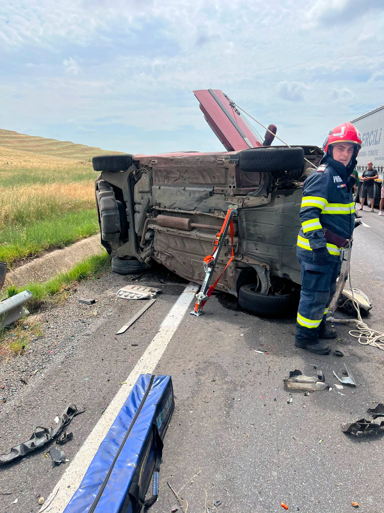

Un accident grav s-a produs pe DN 56A, între localitățile Izimșa și Salcia, din județul Mehedinți, și s-a încheiat tragic. În ciuda eforturilor depuse de echipajele medicale, un minor în vârstă de 11 ani, aflat în stare de inconștiență la sosirea salvatorilor, nu a mai putut fi salvat.
La fața locului au intervenit echipaje ale Inspectoratului pentru Situații de Urgență Mehedinți, ale Serviciului de Ambulanță Județean, precum și polițiști, pentru gestionarea accidentului și stabilirea împrejurărilor în care s-a produs.
Potrivit reprezentanților ISU Mehedinți, echipajul Serviciului de Ambulanță Județean a efectuat manevre de resuscitare la fața locului, însă, din nefericire, medicii nu au putut face nimic pentru a-l salva pe copil, iar decesul acestuia a fost declarat la locul accidentului.
Cealaltă victimă a accidentului, un bărbat care a rămas încarcerat în autoturism după ce acesta a părăsit partea carosabilă, a fost descarcerat de pompieri în stare de conștiență. Bărbatul a fost transportat de un echipaj SAJ la Unitatea de Primiri Urgențe din Drobeta-Turnu Severin, pentru îngrijiri medicale.
Pompierii au asigurat, totodată, măsurile de prevenire și stingere a incendiilor la locul producerii accidentului.
Polițiștii continuă cercetările pentru a stabili cu exactitate cauzele și împrejurările în care s-a produs tragedia de pe DN 56A. Cazul rămâne în atenția autorităților, urmând ca ancheta să lămurească toate detaliile accidentului.